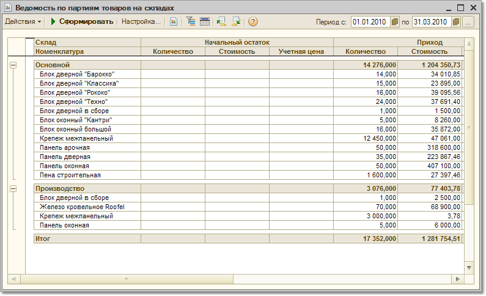

Меню Отчеты > Складской учет > Ведомость по партиям товаров на складах
Данный отчет позволяет получить данные о партиях товаров на складах и их движении за заданный период.
Параметры формирования отчета
По кнопке "Настройка" вызывается форма настройки параметров отчета. Настройка может быть как обычной, так и расширенной (белее подробной, с закладками). Для переключения между вариантами настройки используется флаг "Расширенная настройка".
Показатели
Группировки строк
Отчет может быть сгруппирован по периодам, складам, документам оприходования и т.д.. Новая группировка добавляется по кнопке "Добавить". В качестве группировки может быть использован любой реквизит документа, в том числе характеристика и качество товара, контрагент и т.п..
Отборы
Данные отчета могут быть отфильтрованы по условиям, заданным в блоке "Отборы". Чтобы добавить вид отбора, щелкните кнопку "Добавить" и выберите поле, по которому будет производиться отбор. Затем задайте Тип сравнения, который определит область поиска заданного значения. Значение отбора выбирается из соответствующего справочника. Значением отбора может быть как отдельный элемент, так и группа и список выбранных элементов.
Значение отбора должно согласоваться с видом сравнения! Например, если необходимо произвести отбор по группе товаров "Бытовая техника", необходимо выбрать вид сравнения "В группе", а если отбор должен производиться по нескольким товарам из списка, выберите вид сравнения "В списке" и т.п.
Вид отбора активен, только если в строке вида отбора установлен флаг.
Информация в отчете
